Home >
Products and Services > Products and Catalogue Download
Products and Catalogue Download
Browse and download FUKUI product catalogues in PDF format, covering spring-loaded, pilot-operated and marine safety valve series. If you need help selecting a valve for your application, please contact our UK team.
Here you can download our product catalogs which open in PDF files.
In order to view our catalogs, you need the free Acrobat Reader software from Adobe Incorporated. Please click on Adobe Logo and download the software if needed.
* How to save the PDF files For Windows Internet Explore: Right click on the catalog and select "Save Target As" (A), then save the file.
| PSL-MD Series |
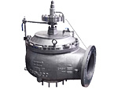 |
PSL-MD Series is slight-pressure-type diaphragm valve, which has been developed to intend to use for low temperature and low pressure and has a dominant market share of the liquefied gas carrier such as LPGC. This series has a large coefficient of discharge and high seat tightness and meets almost all ship classification.
|
| Pressure | from 1 to 250 kPa |
Temperature | from -196 to 125 deg C |
|
| PSL-MP Series |
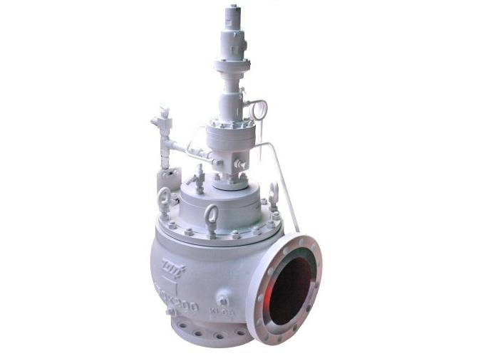 |
PSL-MP Series is piston type pilot operated pressure relief valve, which has been developed to intend to use for low temperature and middle pressure and has a dominant market share of pressurized gas carrier such as LPGC. This series has a large coefficient of discharge and high seat tightness and meets almost all ship classification. |
| Pressure | from 0.1 to 2 MPa |
Temperature | from -196 to 125 deg C |
|
| SL / SJ Series |
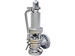 |
SL / SJ Series has been developed as a safety valve for steam service especially marine main boilers and auxiliary boilers and conform to various ship classifications.
This series is designed to withstand severe specifications of high temperature and high pressure.
|
| Pressure | to 20.6 MPa |
Temperature | to 570 deg C |
|
| RE Series |
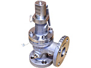 |
RE Series is the spring loaded safety valve and mainly used for cargo piping. Basic design is based on API526 and it covers wide range of pressure and temperature.
|
| Pressure | to 41.36 MPa |
Temperature | from -267.8 to 538 deg C |
|
| SP Series |
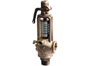 |
SP Series is a safety valve made of bronze which conforms to various ship classifications.
|
| Pressure | to -2.157 MPa |
Temperature | to 220 deg C |
|
| SL / SJ Series |
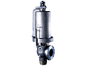 |
SL / SJ Series is a safety valve for steam service of boiler which is getting higher temperature and pressure year after year for advancing power generation efficiency. This series have been approved by the National Board of Boiler and Pressure Vessel Inspectors as meets all of demanding requirements from ASME Boiler and Pressure Vessel Code Section I Power Boiler. In addition, it meets with domestic and foreign regulations such as technical standard for thermal power generation and CE mark. |
| Pressure | to 34.8 MPa |
Temperature | to 604 deg C |
|
| RE-STM Series |
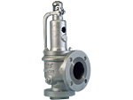 |
RE-STM Series is mainly used for steam piping. This series have been approved by the National Board as a safety valve for steam piping which meets all of demanding requirements from ASME Section VIII. In addition, it meets with domestic and foreign regulations such as technical standard for thermal power generation and CE mark. |
| Pressure | to 41.36 MPa |
Temperature |
from -267.8 to 538 deg C |
|
| RVK, RHK Series |
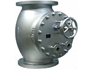 |
RVK, RHK Series is a relief valve intended for heat exchanger, which conforms to HEI regulations. We have a wide variety of size from 8 to 30 inches.
|
| | |
| |
|
| PCV Series |
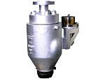 |
PCV Series is the power actuated pressure relief valve for steam. The power
of this valve is the air or electromagnet.
|
| Pressure | to 30 MPa |
Temperature | to 604 deg C |
|
| RPE Series |
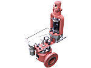 |
RPE Series has been approved by ASME Section I as the pilot operated relief valve for feed-water system. This series can be used for both vapor and water.
|
| Pressure | to 25 MPa |
Temperature | to 350 deg C |
|
| RE Series |
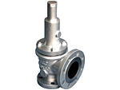 |
RE Series is the spring loaded safety valve designed and manufactured in accordance with API526. This series meets all of requirements from ASME Section VIII and have been approved by the National Board. In addition, it meets many kinds domestic and foreign regulations and authorizations such as CE mark or TS mark. |
| Pressure | to 41.36 MPa |
Temperature | from -267.8 to 538 deg C |
|
| RE (large bore type) |
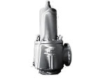 |
Its inlet size is more than or equal to 10 inches. This series meets all of requirements from ASME Section VIII and have been approved by the National Board.
|
| Pressure | to 0.35 MPa |
Temperature | from -196 to 538 deg C |
|
| RECLP Series |
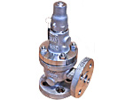 |
RECLP Series is the pressure relief valve for pump relief. It has the mechanism to pretend chattering caused by a pulsation.
|
| Pressure | to 3 MPa |
Temperature | from 0 to 200 deg C |
|
| RPS Series |
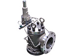 |
RPS Series is the pilot operated valve designed and manufactured in accordance with API526. This series meets all of requirements from ASME Section VIII and have been approved by the National Board. We can offer both the non-flow pop type and non-flow modulate type. |
| Pressure | to 28 MPa |
Temperature | from 0 to 300 deg C |
|
| RTE Series |
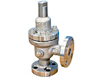 |
RTE Series has been developed for thermal relief.
|
| Pressure | to 9.92 MPa |
Temperature | from -196 to 232 deg C |
|
| EVDW Series |
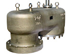 |
EVDW Series is the vacuum relief valve which has been developed for the low temperature liquid storage tank. It is characterized by a large amount capacity and simple design.
|
| Pressure | from -0.22 to 0.66 kPa |
Temperature | ambient temperature |
|
| PSL-MD Series |
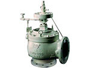 |
PSL-MD Series is the diaphragm type pilot operated valve which has been developed for the low temperature and pressure liquid storage tank of LNG, LPG, or ethylene. It has large coefficient of discharge and high seat tightness.
|
| Pressure | from 1to 250 kPa |
Temperature | from -196 to 125 deg C |
|